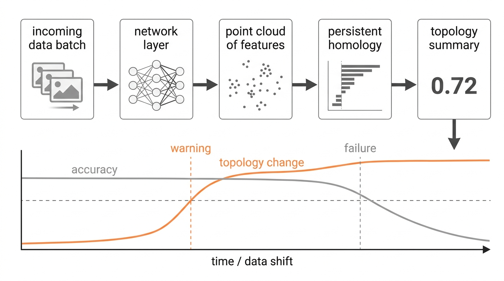

Can Topology Predict Neural Network Failure?

In one sentence
Can we watch the shape of a network's internal data — how many separate groups it forms, whether it has loops or holes — and see that shape start to break down before the model's accuracy does?
What is the problem?
Think of a model that reads chest X-rays, moved from the hospital where it was trained to a new one. The new hospital uses a different scanner. Nobody has labeled the new images yet, so nobody knows whether the model still works. Months later, an audit shows that accuracy quietly dropped from the first week.
Inside the model, something must have changed long before the audit. Each image becomes a point in a high-dimensional space, and on the old data those points formed tidy groups — one per diagnosis, clearly apart. On the new scanner's images, those groups may have started to blur, merge, or split into fragments. The answers might still look plausible for a while. The structure underneath was already going wrong.
Topology is the branch of mathematics that studies exactly this kind of structure: not exact distances, but properties like "how many pieces", "is there a loop", "is there an empty cavity". A tool called persistent homology makes those properties measurable on a cloud of data points.
This open problem asks a concrete question: do topological summaries of a network's representation change earlier than accuracy, early enough to be used as a warning — and do they see something that simpler measurements miss? It is the topological half of OP-01.
Why does it matter?
- No labels needed. Topology is computed from the inputs' representations alone, so it can be monitored in deployment, where correct answers arrive late or never.
- A different kind of evidence. Most monitoring looks at confidence or distance. Topology looks at the overall shape of many points at once, which may react to slow structural damage that per-point measures miss.
- It goes beyond robustness. The same signal could tell us when inputs are unlike anything seen in training (out-of-distribution detection), when a model is forgetting old tasks while learning new ones (continual learning), and when one client in a shared training setup is sending something odd (federated learning).
What is persistent homology, in plain words?
This is the one technical idea the whole problem rests on, so it is worth a picture.
![Four panels. Points: about twelve dots arranged in a ring plus a few scattered dots. Small radius: a small orange disc around each dot, few touching. Medium radius: discs merge into a ring with an empty hole in the middle, labeled loop appears. Large radius: discs cover everything and the hole is filled, labeled loop disappears. Below, a radius axis with several short gray bars labeled noise: short bars, and one long orange bar spanning from the medium to the large radius, labeled real loop: long bar.](../assets/op/op04-fig1.png)
The same recipe also counts pieces: at a small radius every point is its own piece, and pieces merge as the discs grow. Clusters that stay separate for a long time are real groups; ones that merge immediately are not. For a classifier, we would expect, roughly, one long-lived piece per class and few unexplained loops. When data shifts, the barcode should change: classes merging early, new short-lived fragments appearing, loops forming where there were none.
The key idea: watch the barcode, not just the answers
The proposal is to turn this into a monitor that runs alongside the model in deployment.

Note that the monitor works on batches, not single inputs: shape is a property of many points together. That makes it a natural fit for detecting a drifting environment, and a less natural fit for flagging one bad prediction — which is why I see it as a complement to the per-input signals in OP-01, not a replacement.
Why is it hard?
- Cost. Persistent homology on thousands of high-dimensional points is expensive. A practical monitor needs sampling or approximations that do not throw away the signal.
- High dimensions blur distances. In very high-dimensional spaces, all points tend to look roughly equally far apart, which can wash out the shape. The choice of layer and distance matters a lot.
- Which number? A barcode is a whole list of bars. Turning it into one alarm signal — total bar length, number of long bars, distance between today's and yesterday's barcode — is a design choice with no obvious right answer.
- Is it really earlier? Topology might change at the same moment accuracy drops, in which case it adds cost but no warning time.
- Is it really new? Simple statistics such as average distance to the training data may already capture whatever topology captures. The extra information has to be shown, not assumed.
What has been tried so far
- Topology of the network's weights — summarizing the network itself as a graph and measuring its persistent homology, for example to track training progress or model complexity.
- Topology of activations — building graphs from which neurons fire together on an input, and showing that their topology relates to how well the network generalizes, sometimes well enough to estimate test error without a test set.
- Topological uncertainty — comparing the topology of a new input's activation pattern with typical patterns from training, to flag unusual inputs.
- Tracking how topology changes through the layers — showing that well-trained networks progressively simplify the shape of the data, untangling complicated classes into simple ones.
- Non-topological shift detection — statistical tests that compare new data with training data. Useful, and an important baseline that any topological monitor has to beat.
What I have not seen done systematically is the timing question: under gradually increasing shift, does a topological signal reliably move first, and by how much compared with simpler signals?
How I would approach it
- Take ordinary trained classifiers and feed them data under gradually increasing shift — growing noise or blur, a slowly changing camera, attacks of increasing strength.
- At each step, take a batch, extract a middle-layer representation, compute persistent homology on a sample of points, and record a few candidate summaries next to the true accuracy.
- Measure how far ahead of the accuracy drop each summary crosses a threshold, and compare against simple non-topological baselines on the same data.
- Only if topology wins on timing, try it on the wider settings — new kinds of input, continual learning, federated clients — to see whether the same signal carries over.
Questions still open
- Does topological change reliably lead accuracy loss, or only accompany it?
- Which layer's representation gives the earliest and cleanest signal?
- Which summary of the barcode should be the alarm, and how should its threshold be set without labels?
- Can it be computed cheaply enough to run continuously in deployment?
- When the alarm fires, can we tell what changed — which classes merged, which fragments appeared? (see OP-05)
- Could a server detect an unreliable federated client from the topology of its updates or features, without seeing its data? (see OP-11)
If this works, it also suggests the reverse question — whether we can train networks to keep a healthy topology in the first place (OP-06) — and it gives a candidate answer to what makes a representation robust (OP-02).
Work on this together
If you work on topological data analysis, distribution shift or model monitoring — or you maintain a deployed model where labels arrive late and silent failures are costly — I would love to hear from you. Disagreeing with how I framed the problem is just as welcome.
Reach out about OP-04Further reading
- Carlsson — Topology and Data (Bulletin of the American Mathematical Society, 2009)
- Rieck et al. — Neural Persistence: A Complexity Measure for Deep Neural Networks Using Algebraic Topology (ICLR 2019)
- Rabanser, Günnemann & Lipton — Failing Loudly: An Empirical Study of Methods for Detecting Dataset Shift (NeurIPS 2019)
- Corneanu, Escalera & Martinez — Computing the Testing Error Without a Testing Set (CVPR 2020)
- Naitzat, Zhitnikov & Lim — Topology of Deep Neural Networks (JMLR 2020)
- Lacombe et al. — Topological Uncertainty: Monitoring Trained Neural Networks through Persistence of Activation Graphs (IJCAI 2021)
- Hensel, Moor & Rieck — A Survey of Topological Machine Learning Methods (Frontiers in Artificial Intelligence, 2021)